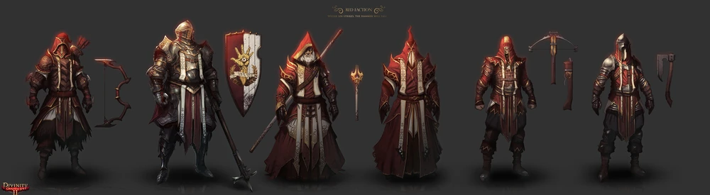
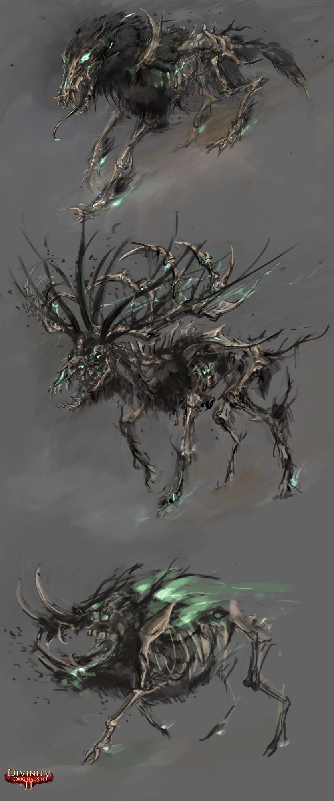

Divinity: Original Sin 2
--------------------------------------------------------------------------------------------------------------
---------------------------------------------Текст под картинкойТекст под картинкойТекст под
Divinity: Original Sin II — пошаговая партийная компьютерная ролевая видеоигра, разработанная и опубликованная компанией Larian Studios.
Вышла в свет во всём мире 14 сентября 2017 года для Microsoft Windows (на дисках и в цифровых магазинах). В августе 2018 года вышла обновлённая версия «Definitive Edition»: на консолях PlayStation 4 и Xbox One, в качестве самостоятельной игры на ПК и виде обновления для обладателей первой ПК-версии игры.
Предыдущая игра серии — Divinity: Original Sin, в настоящее время является последней игрой серии.

